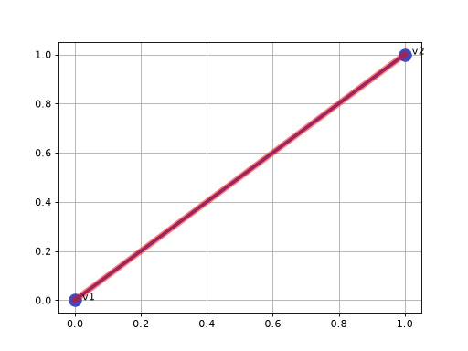
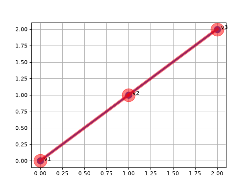
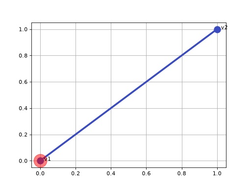
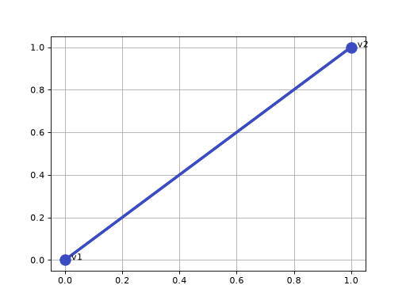

Directed graph
- class pgraph.PGraph.DGraph(metric=None, heuristic=None, verbose=False)[source]
Bases:
_BaseGraphClass for directed graphs

- Seealso:
_BaseGraphUGraph
- classmethod Adjacency(A, coords=None, names=None)
Create graph from adjacency matrix
- Parameters:
- Returns:
graph
- Return type:
Create a directed or undirected graph where non-zero elements
A[i,j]correspond to edges from vertexito vertexj.Warning
For undirected graph
Ashould be symmetric but this is not checked. Only the upper triangular part is used.>>> from pgraph import UGraph >>> import numpy as np >>> A = np.array([[0, 1, 0], [1, 0, 1], [0, 1, 0]]) >>> g = UGraph.Adjacency(A) >>> print(g) UGraph: 3 vertices, 2 edges, 1 component
- Seealso:
- classmethod Dict(d, reverse=False)
Create graph from parent/child dictionary
- Parameters:
- Returns:
graph
- Return type:
Behaves like a constructor for a
DGraphorUGraphfrom a dictionary that maps vertices to parents. From this information it can create a tree graph.By default parent vertices are linked their children. If
reverseis True then children are linked to their parents.>>> from pgraph import UGraph >>> d = {'b': 'a', 'c': 'a', 'd': 'b'} >>> g = UGraph.Dict(d) >>> print(g) UGraph: 4 vertices, 3 edges, 1 component
- Seealso:
- Laplacian()
Laplacian matrix for the graph
- Returns:
Laplacian matrix
- Return type:
NumPy ndarray
g.Laplacian()is the Laplacian matrix (NxN) of the graph where N is the number of vertices.>>> from pgraph import UGraph >>> import numpy as np >>> g = UGraph() >>> for i in range(5): ... g.add_vertex(np.random.rand(2)) UVertex[#0, coord=(0.05514, 0.6513)] UVertex[#1, coord=(0.8759, 0.5045)] UVertex[#2, coord=(0.2384, 0.2535)] UVertex[#3, coord=(0.7847, 0.9712)] UVertex[#4, coord=(0.8221, 0.04689)] >>> for i, j in [(0, 1), (0, 2), (0, 3), (1, 2), (1, 3), (3, 4)]: ... g.add_edge(g[i], g[j]) Edge{[#0] -- [#1], cost=0.8338} Edge{[#0] -- [#2], cost=0.438} Edge{[#0] -- [#3], cost=0.7966} Edge{[#1] -- [#2], cost=0.6851} Edge{[#1] -- [#3], cost=0.4755} Edge{[#3] -- [#4], cost=0.925} >>> L = g.Laplacian() >>> print(L) [[ 3 -1 -1 -1 0] [-1 3 -1 -1 0] [-1 -1 2 0 0] [-1 -1 0 3 -1] [ 0 0 0 -1 1]]
Note
Laplacian always has at least one zero eigenvalue (each row of
degree() - adjacency()sums to zero, so the all-ones vector is always a right null vector).For an undirected graph specifically: the Laplacian is symmetric and positive-semidefinite, and the number of zero-valued eigenvalues equals the number of connected components.
For a directed graph, this computes the out-degree Laplacian (a real, recognized construction, e.g. in directed consensus/synchronization literature) – but it is generally not symmetric, its eigenvalues can be complex, and the zero-eigenvalue/component-count relationship above does not hold. For example a simple weakly-connected out-tree (one component) already has two zero eigenvalues, not one.
- Seealso:
- __init__(metric=None, heuristic=None, verbose=False)
Abstract base class for graphs
- Parameters:
This is the common base class of
UGraphandDGraphand should not be instantiated directly.
- add_edge(v1, v2, **kwargs)
Add an edge to the graph (base class method)
- Parameters:
- Returns:
edge
- Return type:
Create an edge between a vertex pair and adds it to the graph.
This is a graph centric way of creating an edge. The alternative is the
connectmethod of a vertex.>>> from pgraph import UGraph >>> g = UGraph() >>> v1 = g.add_vertex(coord=[0,0], name='v1') >>> v2 = g.add_vertex(coord=[1,1], name='v2') >>> v3 = g.add_vertex(coord=[2,2], name='v3') >>> e = g.add_edge(v1, v2) >>> print(e) Edge{[v1] -- [v2], cost=1.414} >>> e2 = g.add_edge('v2', 'v3', cost=99) >>> print(e2) Edge{[v2] -- [v3], cost=99}
- Seealso:
- add_vertex(coord=None, name=None)
Add a vertex to the graph
- Parameters:
- Raises:
TypeError –
coordis aBaseVertexof the wrong kind- Returns:
the added vertex
- Return type:
BaseVertex subclass
g.add_vertex()creates a new vertex with optionalcoordandname.g.add_vertex(v)takes an instance or subclass of this graph’s own vertex kind and adds it to the graph.
If the vertex has no name and
nameis None give it a default name#NwhereNis a consecutive integer.The vertex is placed into a dictionary with a key equal to its name.
This single implementation, shared by
UGraphandDGraph, is parameterized by each subclass’s_vertex_clsrather than duplicated per subclass – see Object lifecycle and graph-membership policy for why that matters.- Seealso:
- adjacency()
Adjacency matrix of graph
- Returns:
adjacency matrix
- Return type:
ndarray(N,N)
The elements of the adjacency matrix
[i,j]are 1 if vertexiis connected to vertexj, else 0.>>> from pgraph import UGraph >>> import numpy as np >>> g = UGraph() >>> for i in range(5): ... g.add_vertex(np.random.rand(2)) UVertex[#0, coord=(0.0108, 0.7279)] UVertex[#1, coord=(0.2305, 0.781)] UVertex[#2, coord=(0.8922, 0.9311)] UVertex[#3, coord=(0.6225, 0.1721)] UVertex[#4, coord=(0.647, 0.494)] >>> for i, j in [(0, 1), (0, 2), (0, 3), (1, 2), (1, 3), (3, 4)]: ... g.add_edge(g[i], g[j]) Edge{[#0] -- [#1], cost=0.226} Edge{[#0] -- [#2], cost=0.9045} Edge{[#0] -- [#3], cost=0.8265} Edge{[#1] -- [#2], cost=0.6785} Edge{[#1] -- [#3], cost=0.7242} Edge{[#3] -- [#4], cost=0.3229} >>> A = g.adjacency() >>> print(A) [[0. 1. 1. 1. 0.] [1. 0. 1. 1. 0.] [1. 1. 0. 0. 0.] [1. 1. 0. 0. 1.] [0. 0. 0. 1. 0.]]
Note
vertices are numbered in their order of creation. A vertex index can be resolved to a vertex reference by
graph[i].for an undirected graph the matrix is symmetric
Eigenvalues of
Aare real and are known as the spectrum of the graph.The element
A[i,j]can be considered the number of walks of length one edge from vertexito vertexj(either zero or one).If
Ak = A ** kthe elementAk[i,j]is the number of walks of lengthkfrom vertexito vertexj.
- Seealso:
- average_degree()
Average degree of the graph
- Returns:
average degree
- Return type:
Average degree is \(2 E / N\) for an undirected graph and \(E / N\) for a directed graph where \(E\) is the total number of edges and \(N\) is the number of vertices.
>>> from pgraph import UGraph >>> g = UGraph() >>> v1 = g.add_vertex(name='v1') >>> v2 = g.add_vertex(name='v2') >>> v3 = g.add_vertex(name='v3') >>> g.add_edge(v1, v2) Edge{[v1] -- [v2], cost=None} >>> g.add_edge(v2, v3) Edge{[v2] -- [v3], cost=None} >>> print(g.average_degree()) 1.3333333333333333
- Seealso:
- closest(coord)
BaseVertex closest to point
- Parameters:
coord (ndarray(n)) – coordinates of a point
- Returns:
closest vertex and its distance, or
(None, inf)if no vertex in the graph has a coordinate- Return type:
BaseVertex subclass or None, float
Returns the vertex closest to the given point. Distance is computed according to the graph’s metric. Vertices without a coordinate (
coordis None) are skipped – they have no position to compare.>>> from pgraph import UGraph >>> g = UGraph() >>> v1 = g.add_vertex(coord=[0,0], name='v1') >>> v2 = g.add_vertex(coord=[10,10], name='v2') >>> vertex, d = g.closest([1, 1]) >>> print(vertex, d) [v1] 1.4142135623730951
- Seealso:
- component(c)
All vertices in specified graph component
- Parameters:
c (
int) – component index- Returns:
vertices belonging to component
c- Return type:
list of BaseVertex subclass
graph.component(c)is a list of all vertices in graph componentc.>>> from pgraph import UGraph >>> g = UGraph() >>> v1 = g.add_vertex(name='v1') >>> v2 = g.add_vertex(name='v2') >>> v3 = g.add_vertex(name='v3') >>> g.add_edge(v1, v2) Edge{[v1] -- [v2], cost=None} >>> print(g.component(0)) [UVertex[v1, coord=(?)], UVertex[v2, coord=(?)]]
- Seealso:
- connectivity(vertices=None)
Graph connectivity
- Parameters:
vertices (iterable of BaseVertex subclass, optional) – vertices to report connectivity for, defaults to all vertices in the graph
- Returns:
a list with the number of edges per vertex
- Return type:
The average vertex connectivity is:
mean(g.connectivity())
and the minimum vertex connectivity is:
min(g.connectivity())
>>> from pgraph import UGraph >>> import numpy as np >>> g = UGraph() >>> for i in range(5): ... g.add_vertex(np.random.rand(2)) UVertex[#0, coord=(0.872, 0.8891)] UVertex[#1, coord=(0.7442, 0.6566)] UVertex[#2, coord=(0.6822, 0.6571)] UVertex[#3, coord=(0.2062, 0.6631)] UVertex[#4, coord=(0.5271, 0.9498)] >>> for i, j in [(0, 1), (0, 2), (0, 3), (1, 2), (1, 3), (3, 4)]: ... g.add_edge(g[i], g[j]) Edge{[#0] -- [#1], cost=0.2654} Edge{[#0] -- [#2], cost=0.2998} Edge{[#0] -- [#3], cost=0.7032} Edge{[#1] -- [#2], cost=0.06201} Edge{[#1] -- [#3], cost=0.538} Edge{[#3] -- [#4], cost=0.4303} >>> c = g.connectivity() >>> print(c) [3, 3, 2, 3, 1]
- Seealso:
- copy()
Deepcopy of graph
- Returns:
deep copy
- Return type:
_BaseGraph
- degree()
Degree matrix of graph
- Returns:
degree matrix
- Return type:
ndarray(N,N)
This is a diagonal matrix where element
[i,i]is the number of edges connected to vertex idi.Note
For a
DGraphonly outgoing edges are counted, matchingBaseVertex.degree.>>> from pgraph import UGraph >>> import numpy as np >>> g = UGraph() >>> for i in range(5): ... g.add_vertex(np.random.rand(2)) UVertex[#0, coord=(0.4611, 0.6882)] UVertex[#1, coord=(0.1039, 0.3766)] UVertex[#2, coord=(0.7371, 0.149)] UVertex[#3, coord=(0.551, 0.6467)] UVertex[#4, coord=(0.7867, 0.1373)] >>> for i, j in [(0, 1), (0, 2), (0, 3), (1, 2), (1, 3), (3, 4)]: ... g.add_edge(g[i], g[j]) Edge{[#0] -- [#1], cost=0.4741} Edge{[#0] -- [#2], cost=0.6057} Edge{[#0] -- [#3], cost=0.09894} Edge{[#1] -- [#2], cost=0.6729} Edge{[#1] -- [#3], cost=0.5224} Edge{[#3] -- [#4], cost=0.5613} >>> d = g.degree() >>> print(d) [[3 0 0 0 0] [0 3 0 0 0] [0 0 2 0 0] [0 0 0 3 0] [0 0 0 0 1]]
- Seealso:
adjacency()incidence()laplacian()
- distance()
Distance matrix of graph
The elements of the distance matrix
D[i,j]is the edge cost of moving from vertexito vertexj. It is zero if the vertices are not connected.>>> from pgraph import UGraph >>> import numpy as np >>> g = UGraph() >>> for i in range(5): ... g.add_vertex(np.random.rand(2)) UVertex[#0, coord=(0.234, 0.3978)] UVertex[#1, coord=(0.4588, 0.2488)] UVertex[#2, coord=(0.9858, 0.01036)] UVertex[#3, coord=(0.4312, 0.3278)] UVertex[#4, coord=(0.602, 0.2924)] >>> for i, j in [(0, 1), (0, 2), (0, 3), (1, 2), (1, 3), (3, 4)]: ... g.add_edge(g[i], g[j]) Edge{[#0] -- [#1], cost=0.2696} Edge{[#0] -- [#2], cost=0.8457} Edge{[#0] -- [#3], cost=0.2092} Edge{[#1] -- [#2], cost=0.5785} Edge{[#1] -- [#3], cost=0.08363} Edge{[#3] -- [#4], cost=0.1745} >>> d = g.distance() >>> print(d) [[0. 0.26961109 0.84572356 0.20917163 0. ] [0.26961109 0. 0.57847432 0.08363156 0. ] [0.84572356 0.57847432 0. 0. 0. ] [0.20917163 0.08363156 0. 0. 0.17445593] [0. 0. 0. 0.17445593 0. ]]
- Seealso:
- dotfile(filename=None, direction=None)
Export graph as a GraphViz dot file
- Parameters:
filename (str, optional) – filename to save graph to, defaults to None
- Return type:
g.dotfile()creates the specified file which contains the GraphViz code to represent the embedded graph. By default output is to the console.Note
The graph is undirected if it is a subclass of
UGraphThe graph is directed if it is a subclass of
DGraph
The
graphvizformattersdotandneatocan be used to render the graph in various formats including PDF, PNG, JPG, GIF, SVG, etc. The formmatters are similar, butdotis better suited for directed graphs whileneatois better suited for undirected graphs.Note
If
filenameis a file object then the file will not be closed after the GraphViz model is written.>>> from pgraph import UGraph >>> g = UGraph() >>> v1 = g.add_vertex(coord=[0,0], name='v1') >>> v2 = g.add_vertex(coord=[1,1], name='v2') >>> g.add_edge(v1, v2) Edge{[v1] -- [v2], cost=1.414} >>> g.dotfile() graph { "v1" [pos="0,0"] "v2" [pos="1,1"] "v1" -- "v2" }
- Seealso:
- edges()
Get all edges in graph (base class method)
- Returns:
All edges in the graph
- Return type:
set of Edge references
We can iterate over all edges in the graph by:
for e in g.edges(): print(e)
Note
Unlike
BaseVertex.edges(), which returns alistin connection order, this returns asetwith no defined iteration order.>>> from pgraph import UGraph >>> g = UGraph() >>> v1 = g.add_vertex(coord=[0,0], name='v1') >>> v2 = g.add_vertex(coord=[1,1], name='v2') >>> g.add_edge(v1, v2) Edge{[v1] -- [v2], cost=1.414} >>> print(g.edges()) {Edge{[v1] -- [v2], cost=1.414}}
- Seealso:
- property heuristic: Callable[[ndarray[tuple[Any, ...], dtype[_ScalarT]]], float]
Get the heuristic distance metric for graph
- Returns:
heuristic distance metric
- Return type:
callable
This is a function of a single coordinate-difference vector (shape
(n,)), returning a scalar distance.
- highlight_edge(edge, scale=2, color='r', alpha=0.5)
Highlight an edge in the graph
- Parameters:
- Return type:
None
>>> from pgraph import UGraph >>> g = UGraph() >>> v1 = g.add_vertex(coord=[0,0], name='v1') >>> v2 = g.add_vertex(coord=[1,1], name='v2') >>> e = g.add_edge(v1, v2) >>> g.plot(block=None) >>> g.highlight_edge(e)
The plot produced looks like:
(
Source code,png,hires.png,pdf)
- Seealso:
- highlight_path(path, block=False, **kwargs)
Highlight a path through the graph
- Parameters:
path (list of BaseVertex subclass) – sequence of vertices forming a path
block (
bool) – block until figure is dismissed, defaults to Falsekwargs (
Any) – arguments passed tohighlight_edge()andhighlight_vertex()
- Return type:
The vertices and edges along the path are overwritten with a different size/width and color.
>>> from pgraph import UGraph >>> g = UGraph() >>> v1 = g.add_vertex(coord=[0,0], name='v1') >>> v2 = g.add_vertex(coord=[1,1], name='v2') >>> v3 = g.add_vertex(coord=[2,2], name='v3') >>> g.add_edge(v1, v2) Edge{[v1] -- [v2], cost=1.414} >>> g.add_edge(v2, v3) Edge{[v2] -- [v3], cost=1.414} >>> g.plot(block=None) >>> g.highlight_path([v1, v2, v3], block=None)
(
Source code,png,hires.png,pdf)
- Seealso:
- highlight_vertex(vertex, scale=2, color='r', alpha=0.5)
Highlight a vertex in the graph
- Parameters:
vertex (BaseVertex subclass, or iterable of BaseVertex subclass or str) – The vertex (or vertices, or vertex names) to highlight
scale (float, optional) – Overwrite with a line this much bigger than the original, defaults to 1.5
color (str, optional) – Overwrite with a line in this color, defaults to ‘r’
alpha (float, optional) – Transparency of the highlight, defaults to 0.5
- Return type:
None
>>> from pgraph import UGraph >>> g = UGraph() >>> v1 = g.add_vertex(coord=[0,0], name='v1') >>> v2 = g.add_vertex(coord=[1,1], name='v2') >>> g.add_edge(v1, v2) Edge{[v1] -- [v2], cost=1.414} >>> g.plot(block=None) >>> g.highlight_vertex(v1)
(
Source code,png,hires.png,pdf)
- incidence()
Incidence matrix of graph
The elements of the incidence matrix
I[i,j]are 1 if vertexiis connected to edgej, else 0.>>> from pgraph import UGraph >>> import numpy as np >>> g = UGraph() >>> for i in range(5): ... g.add_vertex(np.random.rand(2)) UVertex[#0, coord=(0.4579, 0.1996)] UVertex[#1, coord=(0.4715, 0.1706)] UVertex[#2, coord=(0.5295, 0.6443)] UVertex[#3, coord=(0.9604, 0.4249)] UVertex[#4, coord=(0.7515, 0.4179)] >>> for i, j in [(0, 1), (0, 2), (0, 3), (1, 2), (1, 3), (3, 4)]: ... g.add_edge(g[i], g[j]) Edge{[#0] -- [#1], cost=0.03205} Edge{[#0] -- [#2], cost=0.4504} Edge{[#0] -- [#3], cost=0.5506} Edge{[#1] -- [#2], cost=0.4773} Edge{[#1] -- [#3], cost=0.5511} Edge{[#3] -- [#4], cost=0.2089} >>> I = g.incidence() >>> print(I) [[1. 0. 0. 1. 1. 0.] [1. 1. 0. 0. 0. 1.] [0. 1. 0. 0. 1. 0.] [0. 0. 1. 1. 0. 1.] [0. 0. 1. 0. 0. 0.]]
Note
vertices are numbered in their order of creation. A vertex index can be resolved to a vertex reference by
graph[i].edges are numbered in the order they appear in
graph.edges().Both endpoints of every edge are marked, regardless of direction – for a
DGraphthis means a vertex that is only ever a target (never a source) still appears here, unlikedegree()/BaseVertex.degree, which count outgoing edges only. Iterating each vertex’s ownBaseVertex.edges()instead would silently drop such vertices for a directed graph.
- Seealso:
- iscyclic()
Test if graph is cyclic
- Returns:
true if the graph contains at least one cycle
- Return type:
For an undirected graph this is a simple count: a forest (acyclic) has exactly
n - ncedges, one per component-connecting edge with no redundancy, so any excess indicates a cycle. This is O(1) givenn(),ne()andnc(), which are already cached.For a directed graph this runs Kahn’s algorithm: repeatedly remove vertices with no remaining incoming edges. If every vertex can eventually be removed, the graph is a DAG (acyclic); if some are never freed, they form a cycle. This is O(V+E), using vertices’ outgoing edges via
BaseVertex.neighbours()the same waypath_BFS()and friends do.Note
A matrix-based test also exists in theory – a digraph is acyclic iff its adjacency matrix is nilpotent (all eigenvalues zero) – but that needs an O(N^3) eigendecomposition plus a floating-point zero-tolerance judgement call, to answer a question Kahn’s algorithm answers exactly with integers in O(V+E). Not used here for that reason.
>>> from pgraph import UGraph >>> g = UGraph() >>> v1 = g.add_vertex(name='v1') >>> v2 = g.add_vertex(name='v2') >>> v3 = g.add_vertex(name='v3') >>> g.add_edge(v1, v2) Edge{[v1] -- [v2], cost=None} >>> g.add_edge(v2, v3) Edge{[v2] -- [v3], cost=None} >>> print(g.iscyclic()) False >>> g.add_edge(v3, v1) Edge{[v3] -- [v1], cost=None} >>> print(g.iscyclic()) True
- Seealso:
- property metric: Callable[[ndarray[tuple[Any, ...], dtype[_ScalarT]]], float]
Get the distance metric for graph
- Returns:
distance metric
- Return type:
callable
This is a function of a single coordinate-difference vector (shape
(n,)), returning a scalar distance.
- property n: int
Number of vertices
- Returns:
Number of vertices
- Return type:
>>> from pgraph import UGraph >>> g = UGraph() >>> g.add_vertex(name='v1') UVertex[v1, coord=(?)] >>> g.add_vertex(name='v2') UVertex[v2, coord=(?)] >>> print(g.n) 2
- property nc: int
Number of components
- Returns:
Number of components
- Return type:
Note
Components are labeled from 0 to
g.nc-1.A graph coloring algorithm is run if the graph connectivity has changed.
Note
A lazy approach is used, and if a connectivity changing operation has been performed since the last call, the graph coloring algorithm is run which is potentially expensive for a large graph.
>>> from pgraph import UGraph >>> g = UGraph() >>> v1 = g.add_vertex(name='v1') >>> v2 = g.add_vertex(name='v2') >>> v3 = g.add_vertex(name='v3') >>> g.add_edge(v1, v2) Edge{[v1] -- [v2], cost=None} >>> print(g.nc) 2
- property ne: int
Number of edges
- Returns:
Number of vertices
- Return type:
>>> from pgraph import UGraph >>> g = UGraph() >>> v1 = g.add_vertex(name='v1') >>> v2 = g.add_vertex(name='v2') >>> g.add_edge(v1, v2) Edge{[v1] -- [v2], cost=None} >>> print(g.ne) 1
- path_Astar(S, G, verbose=False, summary=False)
A* search for path
- Parameters:
- Returns:
list of vertices from S to G inclusive, path length, tree
- Return type:
Returns a list of vertices that form a path from vertex
Sto vertexGif possible, otherwise return None.The search tree is returned as dict that maps a vertex to its parent.
The heuristic is the distance metric of the graph, which defaults to Euclidean distance.
>>> from pgraph import UGraph >>> g = UGraph() >>> v1 = g.add_vertex(coord=[0,0], name='v1') >>> v2 = g.add_vertex(coord=[1,0], name='v2') >>> v3 = g.add_vertex(coord=[2,0], name='v3') >>> g.add_edge(v1, v2) Edge{[v1] -- [v2], cost=1} >>> g.add_edge(v2, v3) Edge{[v2] -- [v3], cost=1} >>> path, length, tree = g.path_Astar(v1, v3) >>> print(path) [UVertex[v1, coord=(0, 0)], UVertex[v2, coord=(1, 0)], UVertex[v3, coord=(2, 0)]] >>> print(length) 2.0
- Seealso:
- path_BFS(S, G, verbose=False, summary=False)
Breadth-first search for path
- Parameters:
- Returns:
list of vertices from S to G inclusive, path length
- Return type:
Returns a list of vertices that form a path from vertex
Sto vertexGif possible, otherwise return None.>>> from pgraph import UGraph >>> g = UGraph() >>> v1 = g.add_vertex(coord=[0,0], name='v1') >>> v2 = g.add_vertex(coord=[1,0], name='v2') >>> v3 = g.add_vertex(coord=[2,0], name='v3') >>> g.add_edge(v1, v2) Edge{[v1] -- [v2], cost=1} >>> g.add_edge(v2, v3) Edge{[v2] -- [v3], cost=1} >>> path, length = g.path_BFS(v1, v3) >>> print(path) [UVertex[v1, coord=(0, 0)], UVertex[v2, coord=(1, 0)], UVertex[v3, coord=(2, 0)]] >>> print(length) 2.0
- Seealso:
- path_UCS(S, G, verbose=False, summary=False)
Uniform cost search for path
- Parameters:
- Returns:
list of vertices from S to G inclusive, path length, tree
- Return type:
Returns a list of vertices that form a path from vertex
Sto vertexGif possible, otherwise return None.The search tree is returned as dict that maps a vertex to its parent.
The heuristic is the distance metric of the graph, which defaults to Euclidean distance.
>>> from pgraph import UGraph >>> g = UGraph() >>> v1 = g.add_vertex(coord=[0,0], name='v1') >>> v2 = g.add_vertex(coord=[1,0], name='v2') >>> v3 = g.add_vertex(coord=[2,0], name='v3') >>> g.add_edge(v1, v2) Edge{[v1] -- [v2], cost=1} >>> g.add_edge(v2, v3) Edge{[v2] -- [v3], cost=1} >>> path, length, tree = g.path_UCS(v1, v3) >>> print(path) [UVertex[v1, coord=(0, 0)], UVertex[v2, coord=(1, 0)], UVertex[v3, coord=(2, 0)]] >>> print(length) 2.0
- Seealso:
- plot(colorcomponents=True, force2d=False, vopt={}, eopt={}, text={}, block=False, grid=True, ax=None)
Plot the graph
- Parameters:
vopt (dict, optional) – vertex format, defaults to 12pt o-marker
eopt (dict, optional) – edge format, defaults to None
text (False or dict, optional) – text label format, defaults to None
colorcomponents (
bool) – color vertices and edges by component, defaults to Noneblock (bool, optional) – block until figure is dismissed, defaults to True
- Return type:
The graph is plotted using matplotlib.
If
colorcomponentsis True then each component is assigned a unique color.vertexandedgecannot include a color keyword.If
textis a dict it is used to format text labels for the vertices which are the vertex names. Iftextis None default formatting is used. Iftextis False no labels are added.>>> from pgraph import UGraph >>> g = UGraph() >>> v1 = g.add_vertex(coord=[0,0], name='v1') >>> v2 = g.add_vertex(coord=[1,1], name='v2') >>> g.add_edge(v1, v2) Edge{[v1] -- [v2], cost=1.414} >>> g.plot(block=None)
(
Source code,png,hires.png,pdf)
- Seealso:
- remove(x)
Remove element from graph (deprecated)
- Parameters:
x (Edge or BaseVertex subclass) – element to remove from graph
- Raises:
TypeError – unknown type
- Return type:
Deprecated since version use:
remove_edge()orremove_vertex()instead – this dispatched ontype(x)to two operations with very different blast radii (detach one edge, vs. cascade-remove everything touching a vertex) hidden behind one ambiguous name.- Seealso:
- remove_edge(edge)
Remove an edge from the graph
- Parameters:
edge (
Edge) – edge to remove- Raises:
ValueError –
edgedoes not belong to this graph- Return type:
The edge is removed from this graph’s own edge collection and from the edge lists of its connected vertices, and
edge.v1/edge.v2are cleared toNone.Warning
The connectivity of the network may be changed.
Note
A directed edge is tracked only by its source vertex’s edge list, not its target’s (see
BaseVertex.edges), so membership is checked per endpoint rather than assumed for both – removing a directed edge from an undirected-only implementation would otherwise raiseValueErroron the target side.>>> from pgraph import UGraph >>> g = UGraph() >>> v1 = g.add_vertex(coord=[0,0], name='v1') >>> v2 = g.add_vertex(coord=[1,1], name='v2') >>> e = g.add_edge(v1, v2) >>> g.remove_edge(e) >>> print(g) UGraph: 2 vertices, 0 edges, 2 components
- Seealso:
- remove_vertex(vertex)
Remove a vertex, and all its edges, from the graph
- Parameters:
vertex (
BaseVertex) – vertex to remove- Raises:
ValueError –
vertexdoes not belong to this graph- Return type:
Every edge touching
vertex– incoming or outgoing – is removed viaremove_edge(), then the vertex itself is removed.Warning
The connectivity of the network may be changed.
Note
This scans the graph’s own edge set for edges touching
vertex, rather than iteratingvertex.edges()– for aDGraphvertex that only ever reports outgoing edges (seeBaseVertex.edges), so incoming edges would otherwise be missed and left dangling.>>> from pgraph import UGraph >>> g = UGraph() >>> v1 = g.add_vertex(coord=[0,0], name='v1') >>> v2 = g.add_vertex(coord=[1,1], name='v2') >>> g.add_edge(v1, v2) Edge{[v1] -- [v2], cost=1.414} >>> g.remove_vertex(v2) >>> print(g) UGraph: 1 vertex, 0 edges, 1 component
- Seealso:
- samecomponent(v1, v2)
Test if vertices belong to same graph component
- Parameters:
v1 (BaseVertex subclass) – vertex
v2 (BaseVertex subclass) – vertex
- Returns:
true if vertices belong to same graph component
- Return type:
Test whether vertices belong to the same component. For a:
directed graph this implies a path between them
undirected graph there is not necessarily a path between them
>>> from pgraph import UGraph >>> g = UGraph() >>> v1 = g.add_vertex(name='v1') >>> v2 = g.add_vertex(name='v2') >>> v3 = g.add_vertex(name='v3') >>> g.add_edge(v1, v2) Edge{[v1] -- [v2], cost=None} >>> print(g.samecomponent(v1, v2)) True >>> print(g.samecomponent(v1, v3)) False
- Seealso:
- show()
Print a summary of all vertices and edges to stdout
>>> from pgraph import UGraph >>> g = UGraph() >>> v1 = g.add_vertex(coord=[0,0], name='v1') >>> v2 = g.add_vertex(coord=[1,1], name='v2') >>> g.add_edge(v1, v2) Edge{[v1] -- [v2], cost=1.414} >>> g.show() vertices: [v1] [v2] edges: Edge{[v1] -- [v2], cost=1.414}
- Seealso:
__str__()- Return type:
- showgraph(**kwargs)
Display graph in a browser tab
g.showgraph()renders and displays the graph in a browser tab. The graph is exported in GraphViz format, rendered to PDF usingdotand then displayed in a browser tab.- Seealso:
- classmethod vertex_copy(vertex)
Copy a vertex for use in a new graph of this kind
- Parameters:
vertex (BaseVertex subclass) – vertex to copy
- Returns:
new, unconnected vertex with the same coordinate and name
- Return type:
BaseVertex subclass
A vertex can only belong to a single graph, so this method is used to create a new vertex with the same name and coordinates for inclusion in a new graph – of
cls’s own vertex kind, per_vertex_cls.- Seealso:
{kind=link}
{kind=link}
{kind=link}
{kind=link}
{kind=link}
{kind=link}
{kind=link}
{kind=link}